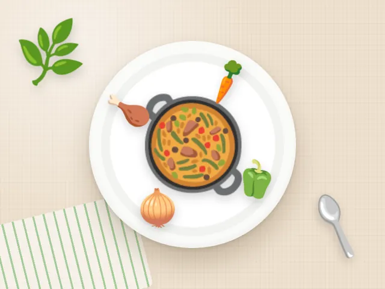

Индейка с овощным рагу
Ккал
342
Белки
45 г
Жиры
10 г
Углеводы
18 г
Состав на порцию
- Индейка тушёная — 140 г
- Овощное рагу — 220 г
- Прованские травы
Как приготовить
- Нарежьте кабачок, перец, морковь и лук.
- Обжарьте индейку 5 минут, добавьте овощи и травы.
- Тушите под крышкой 20 минут.
Калорийность и БЖУ посчитаны по составу на одну порцию. Хотите вписать индейка с овощным рагу в свой рацион? Посчитайте норму в калькуляторе калорий.